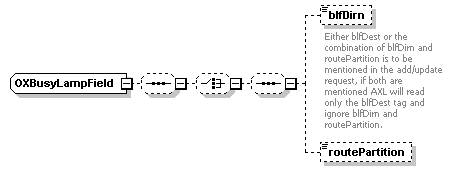
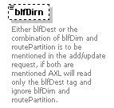

| diagram |  |
| namespace | http://www.cisco.com/AXL/API/10.5 |
| children | blfDirn routePartition |
| source | <xsd:complexType name="OXBusyLampField"> <xsd:sequence minOccurs="0"> <xsd:choice minOccurs="0"> <xsd:sequence minOccurs="0"> <xsd:element name="blfDirn" type="axlapi:String255" minOccurs="0" maxOccurs="1"> <xsd:annotation> <xsd:documentation>Either blfDest or the combination of blfDirn and routePartition is to be mentioned in the add/update request, if both are mentioned AXL will read only the blfDest tag and ignore blfDirn and routePartition.</xsd:documentation> </xsd:annotation> </xsd:element> <xsd:element name="routePartition" type="xsd:string" minOccurs="0" maxOccurs="1"/> </xsd:sequence> </xsd:choice> </xsd:sequence> </xsd:complexType> |
| diagram |  | ||||||
| type | axlapi:String255 | ||||||
| properties |
|
||||||
| facets |
|
||||||
| annotation |
|
||||||
| source | <xsd:element name="blfDirn" type="axlapi:String255" minOccurs="0" maxOccurs="1"> <xsd:annotation> <xsd:documentation>Either blfDest or the combination of blfDirn and routePartition is to be mentioned in the add/update request, if both are mentioned AXL will read only the blfDest tag and ignore blfDirn and routePartition.</xsd:documentation> </xsd:annotation> </xsd:element> |
| diagram | |||||||
| type | xsd:string | ||||||
| properties |
|
||||||
| source | <xsd:element name="routePartition" type="xsd:string" minOccurs="0" maxOccurs="1"/> |